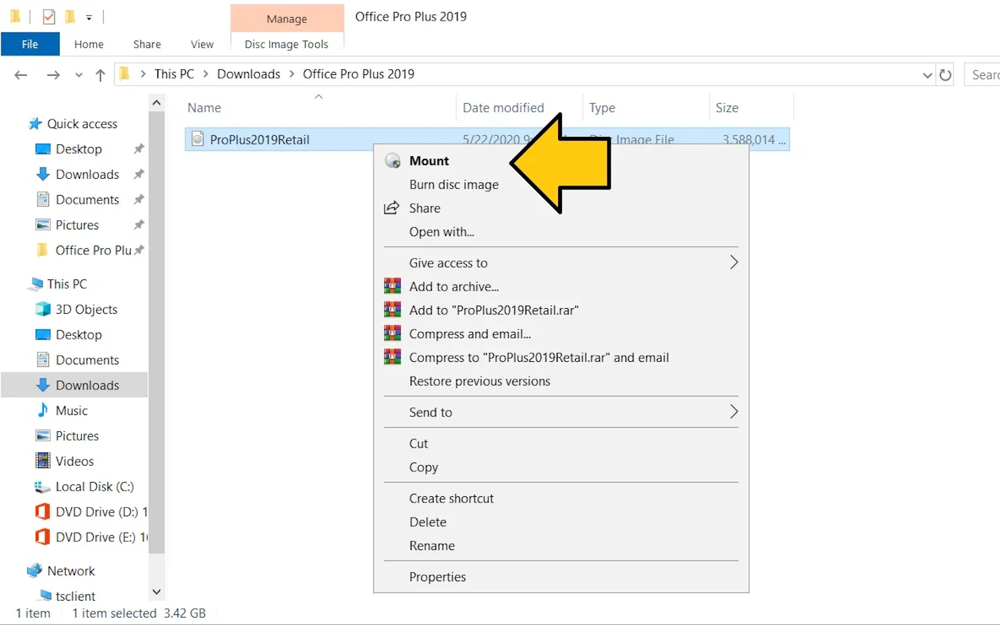
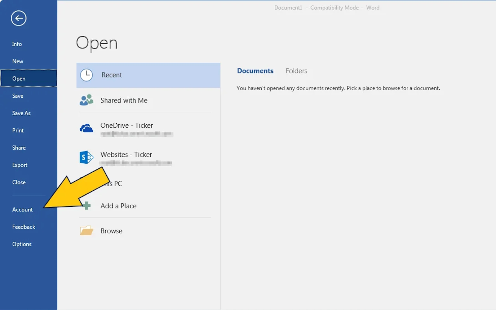
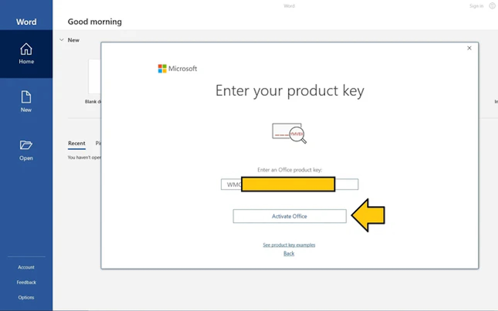
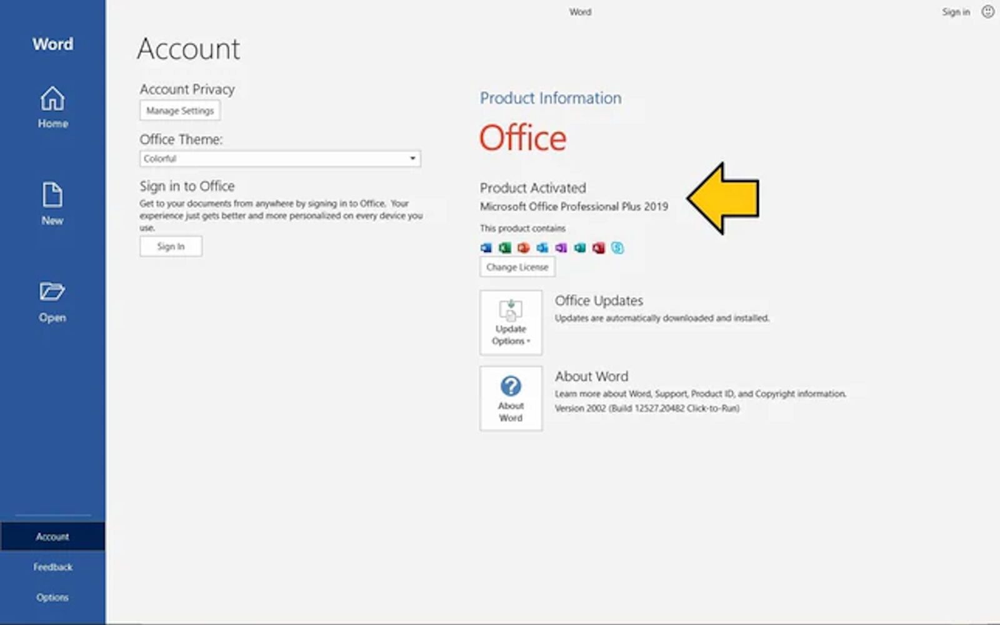

1. Descărcați fișierul de instalare Office de pe linkul de mai sus
2. Faceți dublu clic sau clic dreapta pe fișierul „ProPlus2019Retail.img”, apoi faceți clic pe Montare
3. Faceți dublu clic sau clic dreapta pe fișierul „Setup”, apoi faceți clic pe Deschidere

4. Așteptați finalizarea instalării/configurării
5. Faceți clic pe Start și deschideți orice aplicație Office (de exemplu, deschideți Word)
6. Așteptați să apară ecranul de activare
7. Introduceți cheia de produs pe care ați primit-o după achiziție, apoi faceți clic pe Activare Office
8. Gata acum aveti Office-ul activat
